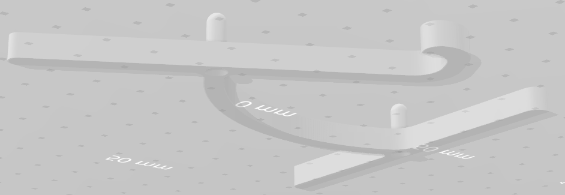
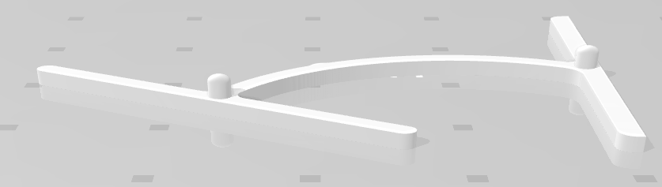
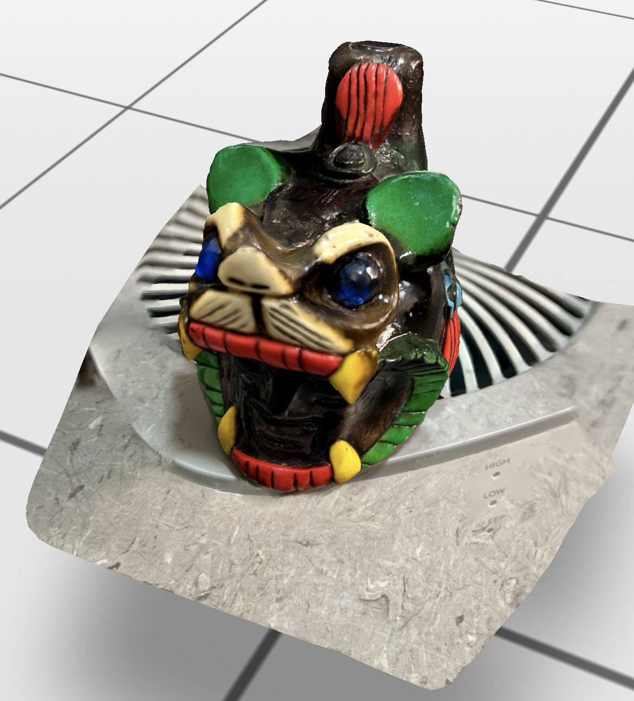

### Week 5: 3D design and printing
Hello there and welcome to the end of week 5,
For this week's assignment, we had to design and print a 3D object. For my original idea, I wanted to make a phone stand with an African map as the base. Making that kind of base turned out to be more complicated than I anticipated as I will explain more here below. As a final product, I decided to go for a more simpler design and made this phone stand shown here below.

To this above image, I made a small modification and added a non-curved support to allow for space for charging when the phone is placed on it. The result gave this image here below.

In order to realize this, I first had to design each individual piece in fusion 360 then import them in prusa to prepare them for printing.
<a href="1.stl" download>
Click Here to download the .stl file for the 1st piece.
</a>
<a href="2-3.stl" download>
Click Here to download the .stl file for the 2nd,3rd and 6th and 7th piece.
</a>
<a href="4-5.stl" download>
Click Here to download the .stl file for the middle pieces that don't have the curved navbar-expand-sm.
</a>
<a href="8.stl" download>
Click Here to download the .stl file for the last piece.
</a>
<a href="gcode.gcode" download>
Click Here to download the sliced .gcode file.
</a>
While in prusa, here are the different settings I applied:
The important settings are probably the fact that I selected no support because my pieces where flat and the infill was just 20% because it did not to be dense and finally I selected the .20mm speed because this kind of work of small magnitude did not require a detailed procedure. I also had to rescale my design to fit the plate, and even then, I could only fit 5 out of the 8 pieces that I needed. However, after printing them all, I realized that it might have been better to use 6 instead of 8 to keep it more neat.
Now into what I initially had imagined my phone stand to look like and what went wrong and what I learned from it.
Here is a picture of the base of the stand I wanted:
The piece on the side was going to be the support and would've been attached to the coasts of that continent. The image of the map was a file I downloaded and initially planned on making into a sketch to make the appropriate assemblies. However, I ran into the problem of changing it into a face that could be recognized by fusion 360 and would have let me work with it.
I learned how to do it though. After inserting my mesh image in stl file, I had to generate face groups around the image that I wanted and that function can be found under "Mesh" then "Prepare" drop down menu and "Generate Face group". After, I had to go under "Modify" and "convert mesh" into a prismatic figure. This is where it went wrong. The file never converted even after trying on a more robust computer. It took too long and at the end, it just mapped out 2 random circles from the image.
The other alternative would've been to draw out the map myself, but because I wanted a detailed one with the countries borders, it would have taken a long time. So I went with the design you saw above.
Here are pictures of the stand executing its function-- holding a phone. It's also nice because I can place my phone horizontally without having to worry about adjusting the stand as some other phone stand do.
<div class="row">
<div class="column">
</div>
<div class="column">
</div>
</div>
Here below is a short video showing the 3D printer starting to work.
<video width="620" height="440" controls src="IMG_4837.mp4"></video>
The pro of using a 3D printer is that it allows for flexibility in the kinds of design you make. I wouldn't have been able to create the side piece that attaches to the next piece had I used a laser cutter. However, it takes a long time to print which is one of the cons of 3D printing.
We were also asked to make a scan of an object. I decided to scan my Aztec whistle. I was pretty impressed by the result which is very realistic. I used an app called Metascan which let you take at least 20 pictures of the object and then processes it into a 3D scan. I had used Polycam and photogrammetry but they were not successful.
<video width="620" height="440" controls src="metascan.MP4"></video>
Here is a picture of the actual Mexican whistle next to the 3D Scan.
<div class="row">
<div class="column">
<img src="whistle.jpg" alt="Actual picture" style="width:100%">
</div>
<div class="column">

</div>
</div>
<h1> This week's shoutout goes to: </h1>
<ul>
<li>Eshaan for being a great moral support during the 3d printing process</li>
<li>Kassia for teaching me about generating face groups and converting mesh</li>
<li>Eggy for helping me with the correct syntax to outpout arduino code in a more aesthetic way</li>
</ul>